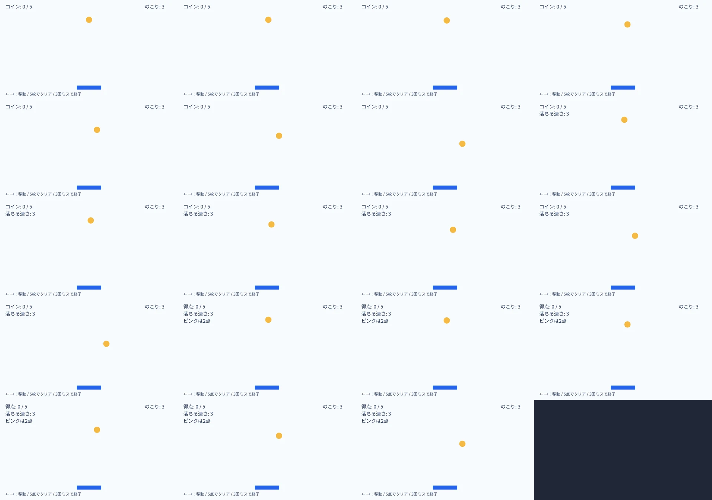
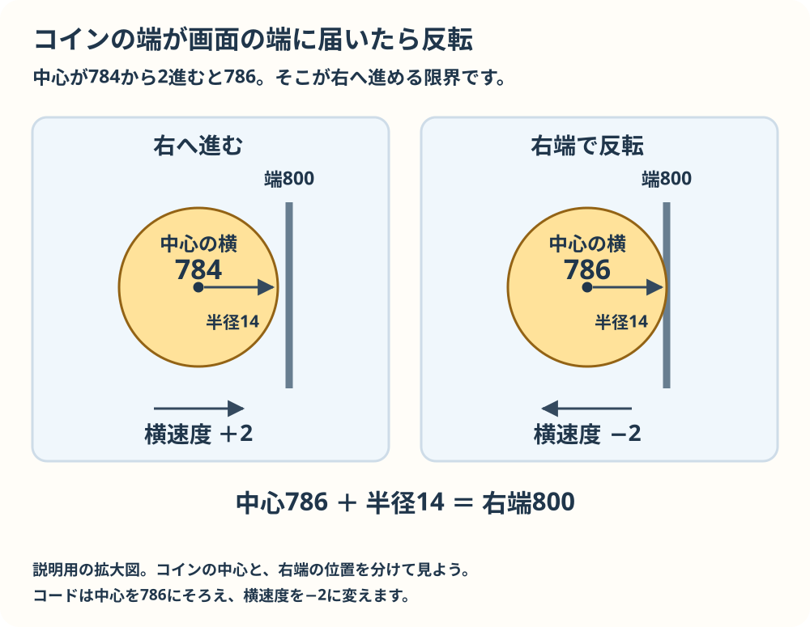

コインキャッチの発展
基本の完成版から3つの機能を順番に追加します。
始める前に
基本編の完成版から始めます。ZIPを展開してできたフォルダーでindex.htmlを開きます。
WindowsでZIPを展開する（動画）
自分で作った基本版でも同じ内容なら使えます。
各段階の変更を上から順に作業用の script.js に加えます。変更前と同じ範囲を探して、変更後のコードに置き換えてください。保存したら index.html を開くか、再読み込みします。
ステップ 1：横にも動くコイン
このステップの見本を図で見る

このステップの見本
この行を足す前 変わったコードの一例（script.js）
let coinDX = 2;
見本で確かめること
落ちるコインが横にも動き、端で折り返すことを確かめます。
落ちながら左右にも動き、端で折り返します。
横に進む量を用意する
先頭の変数宣言で、コインの縦位置の行の下に追加します。
この行の後に追加
let coinY = 80;追加するコード
let coinDX = 2;coinDX は1回の更新で横に進む量です。2なら右に2ピクセル、-2なら左に2ピクセル進みます。
再挑戦の向きを戻す
start() の中で、コインの縦位置を戻す行の下に追加します。
この行の後に追加
coinY = 80;追加するコード
coinDX = 2;再挑戦したとき、コインの横速度を右向きの2に戻します。
横へ動かして端で折り返す
update() の中で、落下させる行の下に追加します。
この行の後に追加
coinY += coinSpeed;追加するコード
coinX += coinDX;
if (coinX <= coinRadius) {
coinX = coinRadius;
coinDX = 2;
} else if (coinX >= canvas.width - coinRadius) {
coinX = canvas.width - coinRadius;
coinDX = -2;
}coinX += coinDX で横に動かします。中心が半径14以下なら左端に届くので、中心を14に戻し右へ進めます。幅800の右端では中心を 800 - 14 = 786 に戻し、速度を-2にして左へ進めます。

中心が横784から右へ2進むと、横786になります。半径14を足すと右端は800なので、画面の端にぴったりです。そこで横速度を−2に変え、次は左へ進みます。
コインを7倍に拡大しています。円の中心と右端を分け、右へ進む前と反転後を並べました。
次のコインも右向きにする
resetCoin() で、縦位置を戻す行の下に追加します。
この行の後に追加
coinY = -coinRadius;追加するコード
coinDX = 2;次のコインが現れたときも、横速度を右向きの2に戻します。
保存後の確かめ方
保存してゲーム画面を更新する（動画）
index.html を再読み込みします。落ちるコインが横にも動き、端で折り返すことを確かめます。 この段階の見本を開く
小さな練習
横速度2を3に変えて動きを比べます。 練習後はコードを元に戻してください。
ステップ 2：得点で落ちる速さを変える
このステップの見本を図で見る
このステップの見本
coinY += coinSpeed;
変わったコードの一例（script.js）coinY += coinSpeed + Math.floor(score / 2);
見本で確かめること
得点が2になると表示される落下速度が4になります。
集めた得点に応じて、コインが少しずつ速く落ちます。
得点に合わせて落下速度を変える
update() の中の落下速度を足す行を置き換えます。
置き換える範囲
coinY += coinSpeed;置き換えるコード
coinY += coinSpeed + Math.floor(score / 2);score / 2 の小数点以下を Math.floor で切り捨てます。得点0・1なら0、2・3なら1。基本速度3に加えるので、得点2では1フレームに4ピクセル落ちます。
落下速度を表示する
draw() の残り回数を表示する行の下に追加します。
この行の後に追加
ctx.fillText("のこり: " + lives, 650, 38);追加するコード
ctx.fillText("落ちる速さ: " + (coinSpeed + Math.floor(score / 2)), 24, 70);同じ計算結果を文字につなぎ、横24・縦70に表示します。丸括弧の中の足し算を先に計算します。
保存後の確かめ方
得点が2になると表示される落下速度が4になります。 この段階の見本を開く
小さな練習
割る数を2から3に変え、速くなる間隔を比べます。 練習後はコードを元に戻してください。
ステップ 3：ボーナスコイン
このステップの見本を図で見る
このステップの見本
score += 1;
変わったコードの一例（script.js）score += bonusCoin ? 2 : 1;
見本で確かめること
ピンクのコインは2点増え、5点以上でクリアになります。
ピンクのコインを取ると2点にします。
コインの種類を覚える
先頭の変数宣言で、横速度の行の下に追加します。
この行の後に追加
let coinDX = 2;追加するコード
let bonusCoin = false;bonusCoin はボーナスかどうかを覚えます。false は通常の1点のコインです。
最初のコインを通常に戻す
start() の横速度と入力解除の行を次のコードに置き換えます。
置き換える範囲
coinDX = 2;
clearKeys();置き換えるコード
coinDX = 2;
bonusCoin = false;
clearKeys();再挑戦の最初は通常のコインです。横速度と入力解除の行も残します。
種類に応じた得点を加える
update() のキャッチ時の加点を置き換えます。
置き換える範囲
score += 1;置き換えるコード
score += bonusCoin ? 2 : 1;bonusCoin ? 2 : 1 はボーナスなら2、そうでなければ1を選びます。その値を得点に足します。
次の種類をランダムに選ぶ
resetCoin() の横速度を戻す行の下に追加します。
この行の後に追加
coinY = -coinRadius;
coinDX = 2;追加するコード
bonusCoin = Math.random() < 0.25;Math.random() は0以上1未満の数です。0.25未満なら true になり、約4回に1回ボーナスになります。
種類で色を変える
draw() のコインの色を指定する行を置き換えます。
置き換える範囲
ctx.fillStyle = "#f5b942";置き換えるコード
ctx.fillStyle = bonusCoin ? "#d457b4" : "#f5b942";ボーナスならピンク、通常なら金色です。加点と同じ bonusCoin を使います。
得点として表示する
draw() の得点表示を置き換えます。
置き換える範囲
ctx.fillText("コイン: " + score + " / " + targetScore, 24, 38);置き換えるコード
ctx.fillText("得点: " + score + " / " + targetScore, 24, 38);コインの枚数ではなく、加算された得点を表示します。
ボーナスの説明を表示する
落下速度の表示の下に追加します。
この行の後に追加
ctx.fillText("落ちる速さ: " + (coinSpeed + Math.floor(score / 2)), 24, 70);追加するコード
ctx.fillText("ピンクは2点", 24, 102);横24・縦102に、ピンクのコインが2点であることを表示します。
ルールの単位を点にする
draw() の画面下のルール表示を置き換えます。
置き換える範囲
ctx.fillText("← →：移動 / " + targetScore + "枚でクリア / " + startingLives + "回ミスで終了", 24, 430);置き換えるコード
ctx.fillText("← →：移動 / " + targetScore + "点でクリア / " + startingLives + "回ミスで終了", 24, 430);クリアの条件を枚数ではなく点数として表示します。
結果画面の単位も点にする
結果画面の集めたコインの表示を置き換えます。
置き換える範囲
ctx.fillText("集めたコイン: " + score + " 枚", canvas.width / 2, 245);置き換えるコード
ctx.fillText("得点: " + score + " 点", canvas.width / 2, 245);結果画面にも得点を表示します。
保存後の確かめ方
ピンクのコインは2点増え、5点以上でクリアになります。Spaceで最初から再挑戦します。 この段階の見本を開く
小さな練習
0.25を0.5に変え、ボーナスが出る割合を比べます。 練習後はコードを元に戻してください。